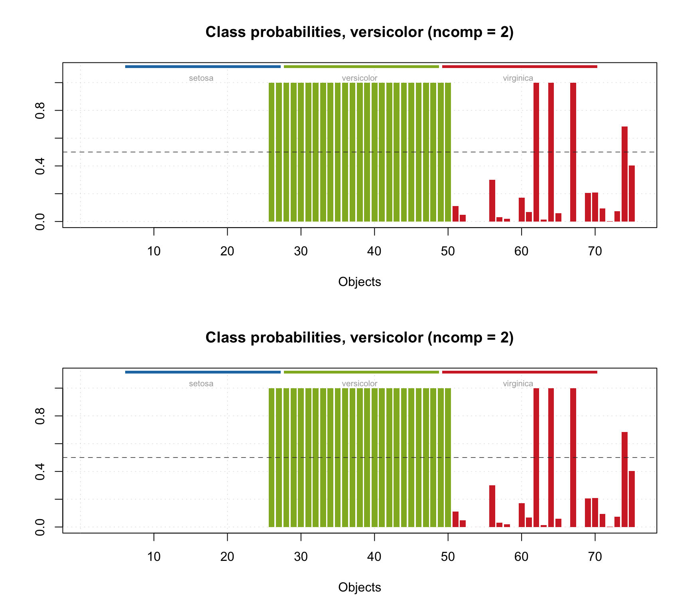
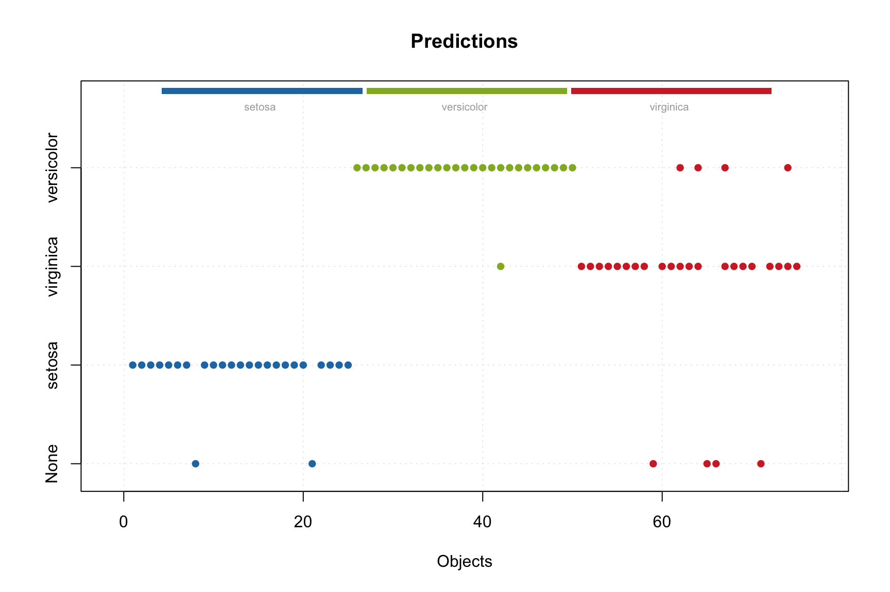
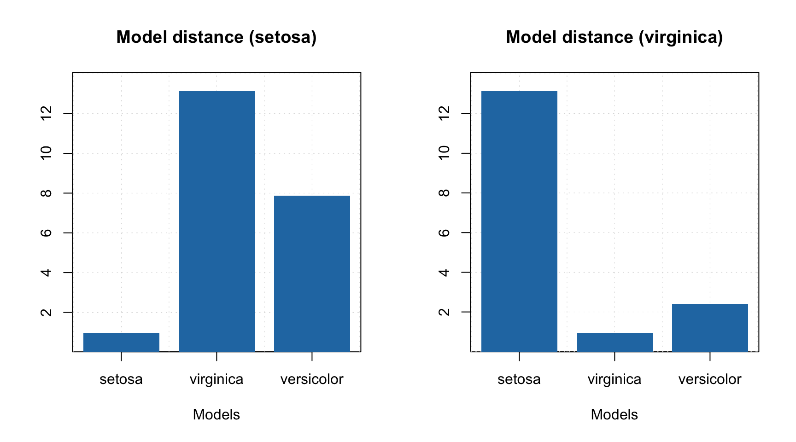

Alternating least squares
The alternating least squares allows to get \(\mathbf{\hat{C}}\) and \(\mathbf{\hat{S}}\) by using iterative algorithm, when the ordinary least squares is applied consequently, first to resolve the concentrations by knowing spectra and then to resolve the spectra by using the resolved concentrations:
\[\mathbf{\hat{C}} = \mathbf{D} \mathbf{\hat{S}} (\mathbf{\hat{S}}^T \mathbf{\hat{S}})^{-1}\] \[\mathbf{\hat{S}} = \mathbf{D}^T \mathbf{\hat{C}} (\mathbf{\hat{C}}^T \mathbf{\hat{C}})^{-1}\]
These two steps continue until a convergence criteria is met. Apparently, there are several issues with the algorithm, that have to be clarified. First of all, to run the first iteration we need to have values for the matrix \(\mathbf{\hat{S}}\). This is what is called initial estimates. In mdatools the initial estimates for the pure component spectra generated automatically as a matrix with random values taken from uniform distribution (between 0 and 1). Apparently the matrix \((\mathbf{\hat{S}}^T \mathbf{\hat{S}})\) should not be singular and using random values will ensure this.
On the other hand, using random values does not always provide reproducible results, so some alternatives can be considered. Therefore user can provide any pre-computed values for \(\mathbf{\hat{S}}\) using parameter spec.ini as it will also shown below.
The second issue is that using ordinary least squares (OLS) method for the iterations will result in a solution with negative values, which is not physically meaningful. To tackle this problem we either need to constrain the solution, for example by setting all negative values to zero, after each iteration, or by using non-negative least squares for solving the equations. In mdatools both options are available.
Finally, as we mentioned before, curve resolution problem does not have a unique solution. To narrow the range of feasible solutions down, and also to move them towards the right one, we can apply different constraints. Some of the constraints are implemented and available for user, some will be implemented later. However, user can easily provide a manual constraint function as it will be shown below.
We will take all these issues gradually and let’s start with non-negativity and constraints.
Non-negativity
To tackle the non-negativity problem, in mdatools you can chose one of the following options:
- Use standard OLS solver and apply non-negativity constraint by setting all negative values to zero.
- Use non-negative least squares solver (NNLS), e.g. proposed by Lawsen and Hanson.
- Use its faster version — Fast Combinatorial NNLS (FC-NNLS) proposed by Benthem and Keenan.
- Use your own solver
The default option is nr. 3 and this is what we would recommend to use. It gives a solution identical to nr. 2 however is much faster in case of multivariate data. You can also provide a function, which implements your own solver. The solver can be changed both for spectra and for contributions, you can even use different solvers for each. The code below shows how to apply MCR-ALS using OLS and FC-NNLS solvers without any constraints.
data(carbs)
# apply MCR-ALS with default solver (FC-NNLS)
m1 = mcrals(carbs$D, ncomp = 3)
# apply MCR-ALS with OLS solver
m2 = mcrals(carbs$D, ncomp = 3, spec.solver = mcrals.ols, cont.solver = mcrals.ols)
# show the resolved spectra
par(mfrow = c(2, 1))
plotSpectra(m1, main = "FC-NNLS solution")
plotSpectra(m2, main = "OLS solution")
As you can see, the OLS solution without non-negativity constraint contains negative values. Once again, if you do not experiment with negative values, using the default option (FCNNLS) will be the best.
Constraints
Constraints are small functions that can be applied separately to current estimates of spectra or contributions on every step of the algorithm in order to improve the solution. A constraint function takes the matrix with spectra or contributions as an input, does something with the values and returns the matrix of the same size as an output. For example, the simplest constraint is non-negativity, which sets all negative values in the matrix to zeros.
In mdatools constraints can be combined together using lists. Spectra and contributions should have separate sets of constrains. In the example below we show how to use some of the built in constraints:
# define constraints for contributions
cc = list(
constraint("norm", params = list(type = "sum"))
)
# define constraints for spectra
sc = list(
constraint("angle", params = list(weight = 0.05)),
constraint("norm", params = list(type = "length"))
)
# run MCR-ALS with the constraints
set.seed(6)
m = mcrals(carbs$D, ncomp = 3, spec.constraints = sc, cont.constraints = cc)
# normalzie the original spectra to unit length
S = prep.norm(mda.t(carbs$S), "length")
# get resolved spectra and transpose them
S.hat = mda.t(m$resspec)
# define color and line width for the spectral curves
col = c("red", "black")
lwd = c(3, 1)
# show the plots separately for each component and each result object
par(mfrow = c(3, 1))
for (a in 1:3) {
s = mda.subset(S, a)
s.hat = mda.subset(S.hat, a)
mdaplotg(list(orig = s, resolved = s.hat), type = "l", col = col, lwd = lwd)
}
As you can see, we use one constraint to normalize the contributions, so they sum up to one on every step. And we use two constraints for the spectra — first angle constraint, which makes spectra less contrast and increases contrast among the resolved concentration profiles. Then we normalize the spectra to the unit length. The constraints are applied to the spectra or contributions on every iteration and in the same order as they are defined in the list.
You may have noticed the following instruction: set.seed(6) in the code block above. This is needed to make results more reproducible. Since the initial estimates for the resolved spectra are obtained using random number generator, the final result can be different from run to run. To avoid this we seed the generator with number 6, so the final result will be the same regardless how many times we run this code.
The list of available constraints and their parameters can be shown by running constraints.list():
##
## List of constraints available for mcrals():
##
##
## Non-negativity (sets negative values to zero)
## ---------------
## name: 'nonneg'
## no parameters required
##
##
## Unimodality (forces contribution or spectral profile to have a single maximum)
## ---------------
## name: 'unimod'
## parameters:
## 'tol': tolerance (between 0 and 1)
##
##
## Closure (forces contributions or spectral profiles sum up to constant value)
## ---------------
## name: 'closure'
## parameters:
## 'sum': value, the data rows should sum up to
##
##
## Normalization (normalize spectra or contributions)
## ---------------
## name: 'norm'
## parameters:
## 'type': type of normalization: 'length', 'area' or 'sum'
##
##
## Angle (increases contrast among resolved spectra or contributions)
## ---------------
## name: 'angle'
## parameters:
## 'weight': how much of mean will be added: between 0 and 1In the next few subsections you will find a short description of the currently implemented constraints with some illustrations, as well as instructions how to make a user defined constraint.
Non-negativity constraint
The non-negativity constraint simply takes a signal (spectra or contributions for a particular component) and set all negative values to zeros. A plot below demonstrates how the constraint works, the gray line represents the original signal, the blue — signal after applying the constraint.

It does not have any parameters, so to add the constraint to the list simply use constraint("nonneg"), e.g.:
Unimodality constraint
The unimodality constraint is used to force signals having only one peak (maximum). This can be particularly useful for constraining contribution profiles, e.g. when spectra came from a reaction and it is appriory known that concentration developing of components has one peak.
The constraint works as follows. First it finds a global maximum in the signal. Then it goes along each side from the peak and checks if intensity of next point in the signal does not exceed the value of the previous one. If it does, constraint will replace the current value by the previous one.
It is also possible to define a tolerance — value between 0 and 1, which allows taking into account small fluctuation of the intensity due to e.g. noise. Thus if tolerance is 0.05, then only when intensity of current point exceeds the intensity of the previous point by more than 5% it will trigger the constraint.
The figure below shows how the constraint works using three signals — one with small extra peak on the left, one with small extra peak on the right and one unimodal signal. A small amount of noise was added to all signals. There are one original signal (gray) and two constrained signals on the plot. The red one shows the result for 0% tolerance and the blue one shows the result for 20% tolerance.

As we can see, because of the noise, the constrained profiles have negative values. In this case it makes sense to combine the unimodality and non-negativity constrains. The result of this combination is shown below.
 In order to add the constraint use
In order to add the constraint use constraint("unimod") for zero tolerance or constraint("unimod", params = list(tol = 0.05)) for 5% tolerance. In the code chunck below you see how to create a set of unimodality and non-negativity constrains e.g. for contribution profiles
Closure constraint
Closure constraint, like unimodality, is mostly applicable to the contribution profiles and aims at preserve the mass balance — so sum of the concetrations of pure components is constant. From that point of view the closure constraint can be thought of normalization made along the observations (or wavelength/wavenumbers in case of spectra) instead of along the components.
The figure below shows how it works using contribution profiles of three components. The colored lines show the profiles and the black dashed line shows the sum of contributions for a given measurements.

The top plot shows the original profiles. The middle plot shows the constrained profiles, where the closure constrained which limits sum of the contributions to one was applied. The bottom plot shows results for the constrains limited the sum to 10.
As you can see in the last two plots, the dashed line show the constant desired value for all measurements. In order to add the constraint use constraint("closure") for unit sum or constraint("closure", params = list(sum = 10)) for e.g. 10.
Normalization constraint
Normalization costraint aims at making spectra or contribution profiles of invididual components normalized. The normalization can be made by unit length, area or sum. For example, in case of sum normalization, sum of all values of each spectrum or contribution profile will be equal to one.
An example below shows two original signals and the result of normalization of the signals to the unit area (so area under each curve is equal to one).

The constrain can be added using constraint("closure", params = list(type = "area")). The value for parameter type can be "area", "length", or "sum"
Angle constraint
Angle constraint allows to change a contrast among the contribution profiles or resolved spectra. The idea was proposed by Windig at al and all details can be found in this paper.
The constraint works as follows. First, mean spectrum or mean contribution profile are computed using the original data, \(\mathbf{D}\). Then, on every iteration, a portion of the mean signal (e.g. 5%) is added, for example, to the resolved contributions. This will lead to smaller contrast among the contribution profiles but, at the same time, will increase the contrast for the resolved spectra. And vice versa, to increase the contrast among the resolved contribution profiles, the constraint should be applied to the spectra.
The constraint can be added using constraint("angle"). By default the portion of mean to be added to the signals is 5% (0.05). To change this value to, e.g. 10%, use constraint("angle", params = list(weight = 0.10)).
User defined constraints
We plan to implement more constraints gradually. However you do not need to wait and can use your own constraints, if necessary. This section shows how to do it step by step and how to combine user defined constraint with the implemented ones.
Let’s say, we want to add a random noise to our resolved spectra on each iteration (sounds very stupid, but let’s use it just for fun in this example). So, first we need to create the constraint function. It should have two mandatory arguments: x which will take a current estimates of spectra or contributions and d which is original data used for resolving. There can be any number of optional arguments, in our case we will use argument noise.level which will define a level of noise in percent of maximum value in x:
Here is the function:
# constraint function which adds random noise from normal distribution
myConstraintFunction <- function(x, d, noise.level = 0.01) {
nr <- nrow(x)
nc <- ncol(x)
noise <- rnorm(nr * nc, mean = 0, sd = max(x) * noise.level)
return(x + matrix(noise, nr, nc))
}As you can see we use normal distribution for generating the noise, with zero mean and standard deviation equal to the 1% of maximum value by default. Load this function to the global environment by running this code.
Next we need to create a constraint object, which will use this function, and set the required level of noise, like it is shown here (we take 2% instead of the default value of 1%):
# create a constraint with noise level of 2%
myConstraint = list(method = myConstraintFunction, params = list(noise.level = 0.02))
class(myConstraint) = "constraint"Next we need to define sets of constraints for contributions and for spectra by using lists, like we did for built in constraints, and add our manual constraint object to the list:
# constraints for contributions
cc = list(
constraint("norm", params = list(type = "sum"))
)
# constraints for spectra
sc = list(
myConstraint,
constraint("norm", params = list(type = "length"))
)Finally, we just run the MCR-ALS algorithm and check the results. I will again seed the random number generator to make results reproducible.
# run mcrals
set.seed(6)
m <- mcrals(carbs$D, ncomp = 3, cont.constraints = cc, spec.constraints = sc)
# normalize the original spectra to unit length
S = prep.norm(mda.t(carbs$S), "length")
# get the resolved spectra and transpose them
S.hat = mda.t(m$resspec)
# define color and line width for the spectral curves
col = c("red", "black")
lwd = c(3, 1)
# show the plots separately for each component and each result object
par(mfrow = c(3, 1))
for (a in 1:3) {
s = mda.subset(S, a)
s.hat = mda.subset(S.hat, a)
mdaplotg(list(orig = s, resolved = s.hat), type = "l", col = col, lwd = lwd)
}
As you can see, even with this rather strange constraint the method works, although the resolved spectra are quite noisy. The presence of negative values in the resolved spectra is because we use normal distribution and the constraint is applied after the solver, which provides non-negative solution.
Initial estimates
As it was mentioned above, one can provide any initial estimates for the spectra as a matrix with size \(J \times A\), where \(A\) is the number of components and \(J\) is number of variables (columns) in the original data. However, the matrix with provided values should not be singular, otherwise the algorithm will fail.
In the example below we provide absolute values of PCA loadings as the initial estimates. No constraints are provided in this case for the sake of simplicity.
m.pca = pca(carbs$D, ncomp = 3, center = FALSE)
m = mcrals(carbs$D, ncomp = 3, spec.ini = abs(m.pca$loadings))
plotSpectra(m)
Overview of resolving process and results
The mcrals() also computes the explained variance, which can be shown using plotVariance() and plotCumVariance() functions. It also has predict() method which works similar to mcrpure. Some examples are shown below:
# define constraints for contributions
cc = list(
constraint("norm", params = list(type = "sum"))
)
# define constraints for spectra
sc = list(
constraint("angle", params = list(weight = 0.05)),
constraint("norm", params = list(type = "length"))
)
# run MCR-ALS with the constraints
set.seed(6)
m = mcrals(carbs$D, ncomp = 3, spec.constraints = sc, cont.constraints = cc)
# show summary
summary(m)##
## Summary for MCR ALS case (class mcrals)
##
## Constraints for spectra:
## - angle
## - norm
##
## Constraints for contributions:
## - norm
##
## Expvar Cumexpvar
## Comp 1 62.64 62.64
## Comp 2 22.73 85.37
## Comp 3 14.19 99.56
Since MCR-ALS is iterative algorithm, it should stop when convergence criteria is met. There are two ways to stop MCR-ALS iterations in mdatools. First is a tolerance (tol) parameter, which tells a minimum difference in explained variance to make the algorithm continue. For example, if explained variance on previous step is 0.95467 and on the current step it is 0.95468, the difference is 0.00001 and the algorithm will continue if the tolerance is smaller than this value.
Another way to limit the iterations is to define the maximum number by using parameter max.iter. By default is is set to 100. The mcrals() has a verbose mode which shows improvements in each iteration as it is demonstrated in the example below (we use the same constraint as in the previous chunk of code)
##
## Starting iterations (max.niter = 100):
## Iteration 1, R2 = 0.000000
## Iteration 2, R2 = 0.957402
## Iteration 3, R2 = 0.976722
## Iteration 4, R2 = 0.987305
## Iteration 5, R2 = 0.992613
## Iteration 6, R2 = 0.994525
## Iteration 7, R2 = 0.995165
## Iteration 8, R2 = 0.995385
## Iteration 9, R2 = 0.995449
## Iteration 10, R2 = 0.995453
## No more improvements.